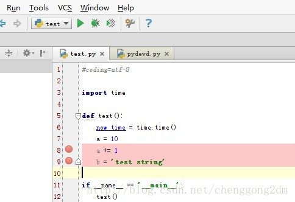
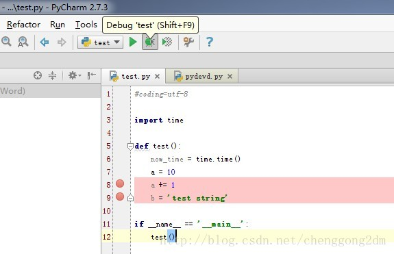
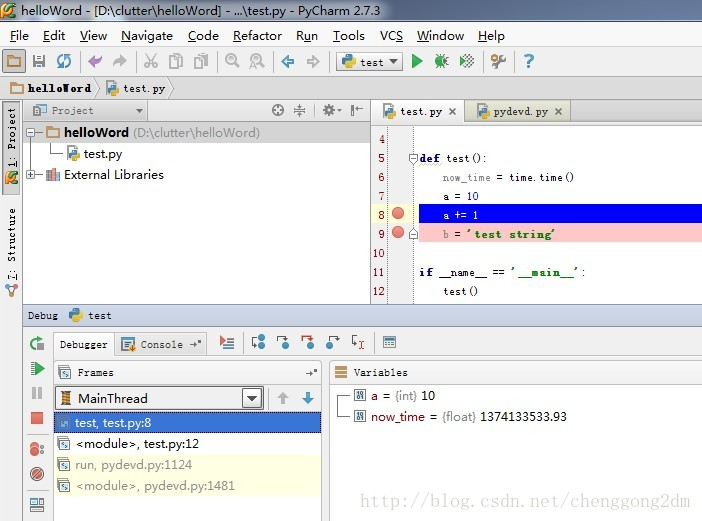
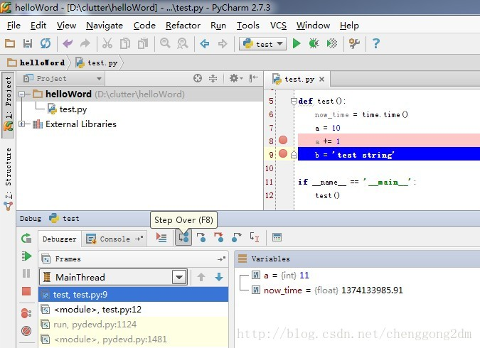
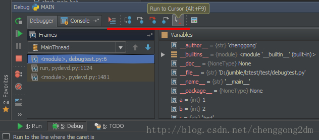

PyCharm 作为IDE，断点调试是必须有的功能。否则，我们还真不如用纯编辑器写的快。
【运行】和【调试】前的设置，详见前面的文章，helloword。
1，设置断点
在代码前面，行号的后面，鼠标单击，就可以设置断点。如下：

2，调试 断点

点击后，会运行到第一个断点。会显示该断点之前的变量信息。

点击Step Over 或者按F8，我们继续往下运行，到下一个断点：

补充：
断点的其他操作，和功能，大家可以把鼠标移到相应的按钮上，看一下，试试便知。如下：

总结：
这就是PyCharm的断点功能，还是很简单易用的。